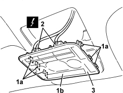
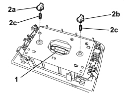

7040E40 MODULAR FRONT COURTESY LIGHT - R R
- Path
- Procedures > 70 FITTINGS > 7040 BODY INTERIOR FITTINGS AND TRIM > 7040E INTERIOR COURTESY LIGHT SYSTEM > 7040E40 MODULAR FRONT COURTESY LIGHT - R R
- Kind
- repair procedure (removal / refitting; the operation number is the code)
- Applies to
- all engines; all production periods
- Interactive page
- https://sloeber94.github.io/elrnDB/alfa/159/en/#/939011255
Applies to: all engines; all production periods
 Removing
Removing
 Refitting
Refitting1. Use the special tool and release the retaining six retainers (1a).
Tool | Description | Function | Validity |
|---|---|---|---|
1823014000 | Knife | Retainer removal |
- Lower the courtesy light (1b) gently
2. Disconnect the electrical connection for the courtesy light.
Description | Component |
|---|---|
FRONT COURTESY LIGHT |
3. Keep the courtesy light.

Applies to: all engines; all production periods
1. If necessary, remove the central bulb by releasing from the side retainers.
2. If necessary, remove side bulb holders (2a) and/or (2b) (bayonet mount), then remove side bulbs (2c) (press-fit).

Applies to: all engines; all production periods
Refitting
Removing- Check that the courtesy light is not damaged.
- If removed, fit the bulb in place.
- Connect the electrical connection for the courtesy light.
- Position the courtesy light and attach the retainers.
- Check that the bulbs are working.
Topics linked from this page (1)
Topics that link to this page (49)
- K073 SEAT BELT UNFASTENED WARNING LIGHT ON
- K157 SEAT BELT NOT FASTENED WARNING LIGHT NOT WORKING
- 5580HC CHECK THE OPERATION OF THE PARKING SENSOR DISABLEMENT BUTTON
- 5505C41 PASSENGER COMPARTMENT WIRING - R.R
- 5570T27 AERIAL SUPPORT - R.R
- 5570T31 AERIAL COAXIAL LEAD - R R
- 5580C50 WINDOW BAG MODULE (ONE) LH OR RH - R.R
- 7030B12 SLIDING ROOF (ASSEMBLY) - R+R
- 7030B40 DRAINAGE CHANNEL - R R
- 7030B50 SUN ROOF SLIDING GUIDE (ONE), LH OR RH - R.R
- 7030B54 SUN ROOF (ASSEMBLY) - ALIGNMENT AND POSITIONING
- 7030B70 SUN ROOF MOVEMENT MOTOR - R+R
- 7035A18 WINDSCREEN GLASS - R.R INCLUDING CLEANING HOUSING
- 7040H10 ROOF PANEL LINING - R.R.
- 7040H16 ROOF PANEL LINING FOR VERSIONS WITH SUN ROOF - R.R
- E1060 A-BUS SERIAL LINE - WIRING DIAGRAM
- E1060 A-BUS SERIAL LINE - COMPONENT LOCATION
- E2510 COURTESY LIGHTS - WIRING DIAGRAM
- E2510 COURTESY LIGHTS - COMPONENT LOCATION
- E2510 COURTESY LIGHTS - WIRING DIAGRAM
- E2510 COURTESY LIGHTS - COMPONENT LOCATION
- E2510 COURTESY LIGHTS - WIRING DIAGRAM
- E2510 COURTESY LIGHTS - COMPONENT LOCATION
- E2510 COURTESY LIGHTS - WIRING DIAGRAM
- E2510 COURTESY LIGHTS - COMPONENT LOCATION
- E2535 CONTROLS LIGHTING - WIRING DIAGRAM
- E2535 CONTROLS LIGHTING - COMPONENT LOCATION
- E2535 CONTROLS LIGHTING - WIRING DIAGRAM
- E2535 CONTROLS LIGHTING - COMPONENT LOCATION
- E3045 BOOT AND FUEL FLAP OPENING - WIRING DIAGRAM
- E3045 BOOT AND FUEL FLAP OPENING - COMPONENT LOCATION
- E3045 BOOT AND FUEL FLAP OPENING - WIRING DIAGRAM
- E3045 BOOT AND FUEL FLAP OPENING - COMPONENT LOCATION
- E3090 PARKING SENSOR - WIRING DIAGRAM
- E3090 PARKING SENSOR - COMPONENT LOCATION
- E3570 INTEGRATED RADIOPHONE - WIRING DIAGRAM
- E3570 INTEGRATED RADIO PHONE - COMPONENT LOCATION
- E3570 INTEGRATED RADIOPHONE - WIRING DIAGRAM
- E3570 INTEGRATED RADIO PHONE - COMPONENT LOCATION
- E3580 PROVISION FOR CELL PHONE - WIRING DIAGRAM
- E3580 PROVISION FOR CELL PHONE - COMPONENT LOCATION
- E4091 CONNECT - WIRING DIAGRAM
- E4091 CONNECT - COMPONENT LOCATION
- E7015 ALARM - WIRING DIAGRAM
- E7015 ALARM - COMPONENT LOCATION
- E7030 AIR BAG - WIRING DIAGRAM
- E7030 AIR BAG - COMPONENT LOCATION
- E7030 AIR BAG - WIRING DIAGRAM
- E7030 AIR BAG - COMPONENT LOCATION